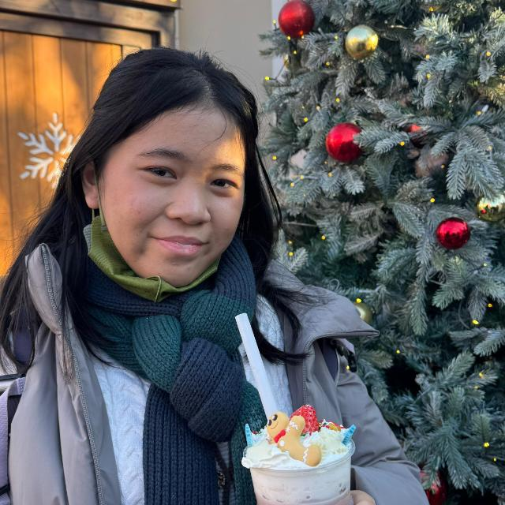
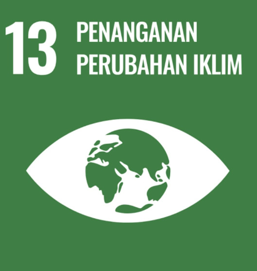

WELCOME TO MY PAGE
Kenalan Yuk!

A LITTLE INTRODUCTION
Hai, semuanya!
I'm Gisella!
Perkenalkan, aku Gisella Vanya Mutiara Sitanggang, biasa dipanggil Gisella. Aku merupakan siswi kelas 9.4 dengan nomor absen 17.
Website ini dibuat sebagai bagian dari tugas kolaborasi beberapa mata pelajaran. Melalui website ini, aku ingin membagikan informasi dan hasil pembelajaran mengenai berbagai isu yang berkaitan dengan kehidupan masyarakat dan lingkungan.
Topik yang Saya Pilih
✧Dalam tugas ini, saya memilih dua fokus utama yang saling berkaitan dengan kehidupan masyarakat dan lingkungan.

SDG 10 · PPKn
Berkurangnya Kesenjangan
Saya memilih SDG 10 karena keadilan sosial merupakan hak setiap warga negara. Ketimpangan ekonomi maupun perbedaan akses terhadap tempat tinggal dan fasilitas yang layak perlu segera diatasi agar semua orang memiliki kesempatan untuk hidup sejahtera.
♡
SDG 13 · IPS
Penanganan Perubahan Iklim
Saya memilih SDG 13 karena perubahan iklim membawa dampak serius bagi kehidupan sosial dan ekonomi manusia. Cuaca ekstrem dan pemanasan global menjadi ancaman bagi kelestarian bumi sehingga kita perlu melakukan tindakan nyata untuk menjaga lingkungan.
♡